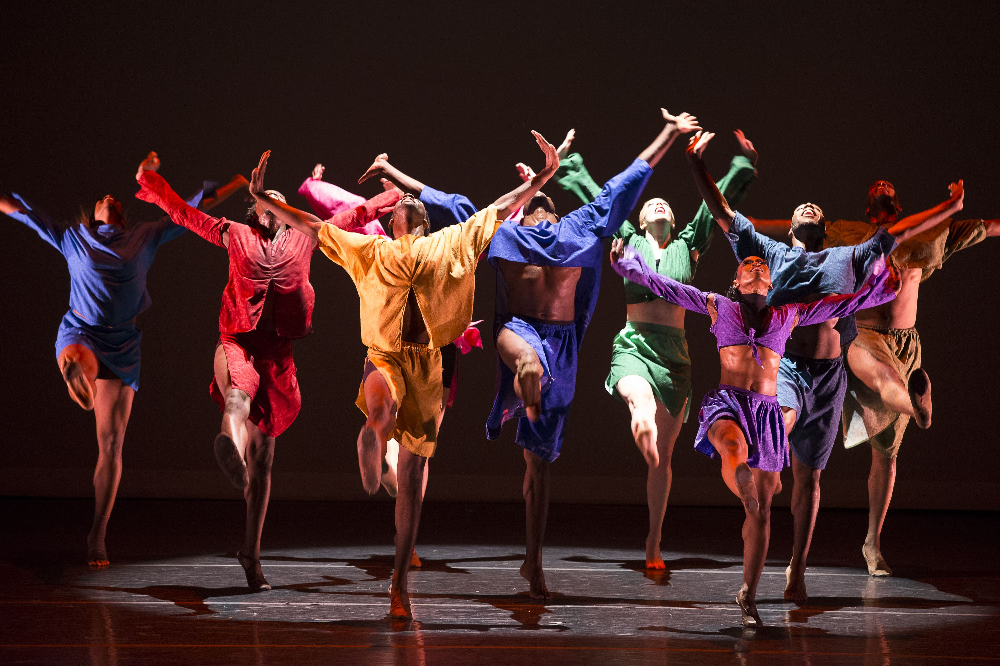

Добро пожаловать в мир танца!
Танец - это прекрасный вид искусства, который позволяет выражать эмоции без слов.
На этом сайте вы узнаете об истории танца, разных стилях и о том, как танцы влияют на нашу жизнь. Танец - это не просто движение, это способ рассказать историю и передать чувства.